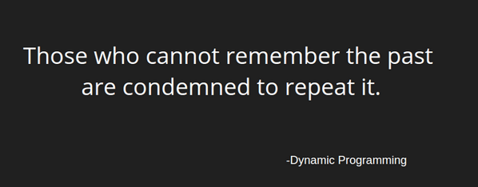
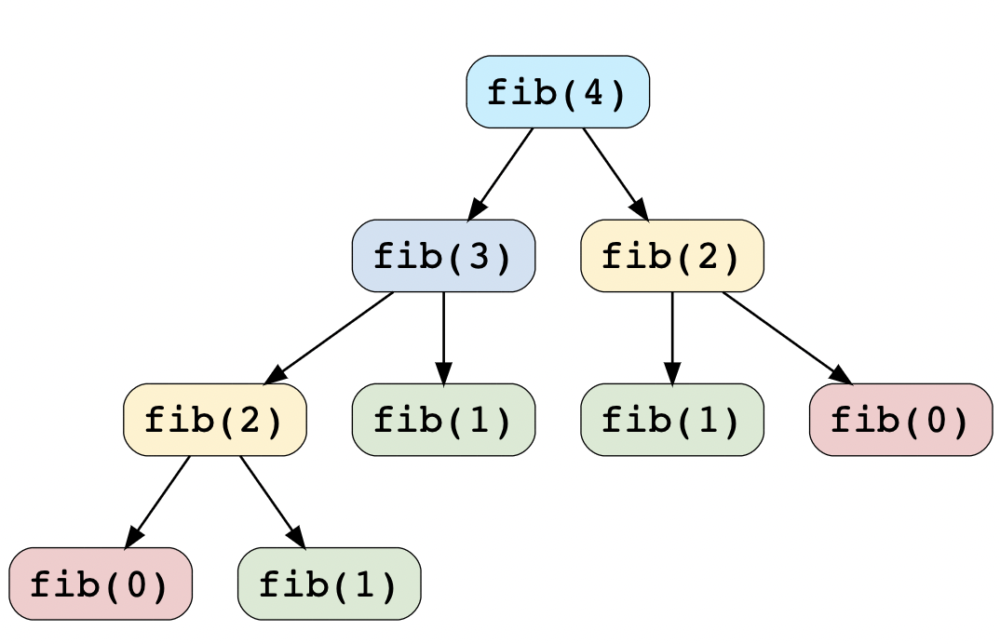

In this article, we would be understanding what is dynamic programming, what are its applications and solve some problems related to it.
Dynamic Programming (DP) is an algorithmic technique for solving an optimization problem by breaking it down into simpler subproblems and utilizing the fact that the optimal solution to the overall problem depends upon the optimal solution to its subproblems.
Before moving on to understand different methods of solving a DP problem, let’s first take a look at what are the characteristics of a problem that tells us that we can apply DP to solve it.
1. Overlapping subproblems
Subproblems are smaller versions of the original problem. Any problem has overlapping sub-problems if finding its solution involves solving the same subproblem multiple times.
2. Optimal Substructure Property
Any problem has optimal substructure property if its overall optimal solution can be constructed from the optimal solutions of its subproblems.
Now let’s take the example of the Fibonacci numbers. As we all know, Fibonacci numbers are a series of numbers in which each number is the sum of the two preceding numbers. The first few Fibonacci numbers are
0, 1, 1, 2, 3, 5, 8,......
and they continue on from there.
So, the general formula to calculate the nth Fibonacci number would be:
Fib(n) = Fib(n-1) + Fib(n-2), for n > 1
Here is a recursive tree of how the 4th fibonacci number should be calculate.
Upon doing the time complexity analysis of this method of calculating the nth Fibonacci number, we find that is is O(2n) A.K.A exponential growth. If you don't understand what is the big-O notation you can read more here.
Now the question arises how do we optimise this?
If you look carefully you would notice that we are calculating numbers like fib(2), fib(1), etc. multiple times. So, the best optimisation would be to not calculate them again and again, instead to calculate them once and store them in an array to reused later.
This process of storing a previous computation for a subproblem and using it to find answer to the main problem is called memoization.
In terms of code if we have an array, fib[n] where n is the position of the nth Fibonacci number. The code for this in C++ would be:
We are given an array with n numbers: a[0…n−1]
The task is to find the length of the longest, strictly increasing, subsequence in a
To accomplish this task we define an array d[0...n-1], where d[i] is the length of the longest increasing subsequence that ends in the element at index i. We will compute this array gradually first d[0], then d[1], and so on. After all the values are computed the answer is the maximum value in d
Now that we understand the problem and have a basic idea on how the solution would be, the next step is to form a recurrence relation! In this case the recurrence relation would be divided on the basis of two cases:
d[i] = 1: the required subsequence consisrs of only the element a[i]
d[i] > 1: if there are is an index j=0...i-1, if a[j] < a[i], then d[i] = max(d[i], d[j]+1)
Now that we have our recurrence ready, let's write the C++ code for the same.
🎉 Congratulations you have learnt to write your first DP code! 🎉
Hope you learnt something new from this article and could understand all of the content given in it.